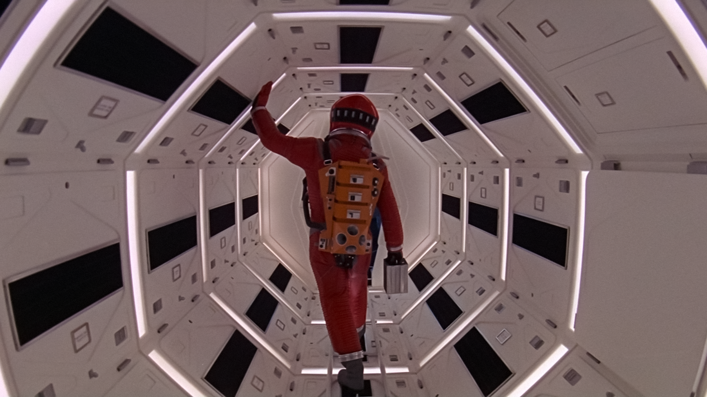
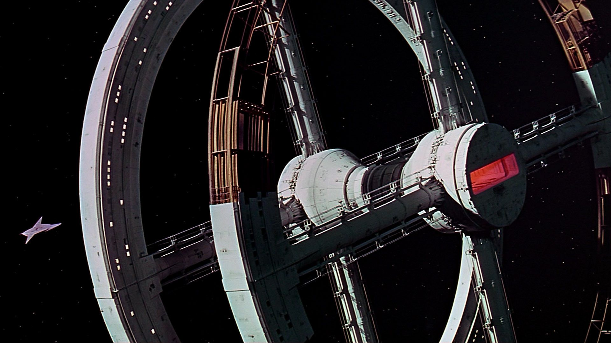

Η ταινία “2001: A Space Odyssey” είναι βρετανικής και αμερικανικής παραγωγής γυρισμένη στην Αγγλία το 1968 με σκηνοθέτη τον Στάνλεϊ Κιούμπρικ. Πρωταγωνιστούν ο Keir Dullea (Dr. David Bowman), ο Gary Lockwood (Dr. Frank Poole), William Sylvester (Dr. Heywood Floyd).
Η ταινία είναι βασισμένη στο μυθιστόρημα επιστημονικής φαντασίας “The Sentinel” του Άρθουρ Κλαρκ, ο οποίος σε συνεργασία με τον ίδιο τον Κιούμπρικ, ήταν και ο σεναριογράφος. Με αρκετά μεγάλη διάρκεια (143 λεπτά) και πλοκή που αγγίζει θέματα όπως η ανθρώπινη εξέλιξη, η ζωή έξω από τον πλανήτη μας και η τεχνητή νοημοσύνη ήταν πολύ προχωρημένη και πρωτοποριακή για την εποχή της και θεωρείται ακόμα και σήμερα η σημαντικότερη ταινία επιστημονικής φαντασίας όλων των εποχών. Αξιοσημείωτη είναι, επίσης, η εξαιρετική χρήση της μουσικής που σε συνδυασμό με τα οπτικά εφέ, τα οποία κέρδισαν Όσκαρ, μαγεύουν τον θεατή.

Το 1991, χαρακτηρίστηκε «πολιτιστικά, ιστορικά ή αισθητικά σημαντική» από τη Βιβλιοθήκη του Κογκρέσου των Ηνωμένων Πολιτειών και επιλέχθηκε να ενταχθεί στο Εθνικό Μητρώο Κινηματογράφου.
